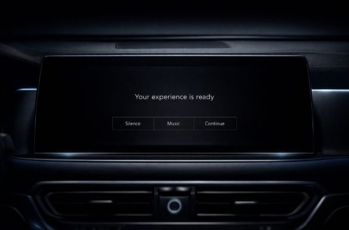

BMW Unique Connect: ultra‑premium mobility.
A web project for BMW: a mobility service for a customer with no time to lose. We defined who it's for, created the Unique Connect brand, designed its website and app, and built the dashboard to measure it.
- Context
- Web project · ESIC Master's
- My role
- I was part of the project team (group 3)
- Deliverables
- Buyer persona, moodboard, brandbook, website, app and KPIs
- Website goal
- Capture qualified access requests
The campaign, out in the world.
How the team's creatives would look on the car's own screen: the service shows up where the customer is.

Alejandro doesn't buy a car. He buys time.
Executive with a packed schedule
Lives between Madrid and Barcelona
annual income (over €500,000)
Wants everything to work without thinking about it
A brand that makes no noise.
“Create an ultra‑premium mobility experience for an exclusive audience.”Brand purpose
Privacy
Quiet luxury
Effortless control
Invisible technology
Anticipation, trust, discretion and precision. A minimalist, elegant and direct tone: short sentences, no unnecessary adjectives.
Inter typeface, in regular and semibold. Unique Connect logo in blue, black and positive versions.
A website with one job: getting the right request.
The website has to convey exclusivity, explain the value proposition and capture qualified access requests through a simple, frictionless process. It rests on three pillars: precision, privacy and a premium experience.
Clear architecture
Short, clear content designed for users with little time.
A single CTA
A single call to action, consistent in visual style and purpose.
Linear structure
Sections follow a narrative order, from the promise to the request.
What we measure to know if it works.
The goal of the whole website: qualified access requests.
minutes average time on site
CTA clicks
scroll depth
conversion rate
Sample dashboard values (April) that we proposed in the project, not real BMW data.
The presentation.
Click a slide to see it full size · use ← → to move through them